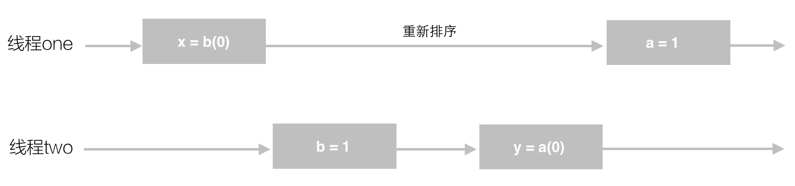

Java内存访问重排序的研究
public class PossibleReordering {
static int x = 0, y = 0;
static int a = 0, b = 0;
public static void main(String[] args) throws InterruptedException {
Thread one = new Thread(new Runnable() {
public void run() {
a = 1;
x = b;
}
});
Thread other = new Thread(new Runnable() {
public void run() {
b = 1;
y = a;
}
});
one.start();other.start();
one.join();other.join();
System.out.println(“(” + x + “,” + y + “)”);
}
}
这段代码的执行结果也可能是（0，0），因为，在实际运行时，代码指令可能并不是严格按照代码语句顺序执行的。
得到（0，0）结果的语句执行过程：

a=1和x=b这两个语句的赋值操作的顺序被颠倒了，或者说，发生了指令“重排序(reording)”
大多数现代微处理器都会采用将指令乱序执行的方法，在条件允许的情况下，直接运行当前有能力立即执行的后续指令，避免获取下一条指令所需数据时造成的等待，通过乱序执行的技术，处理器可以大大提高执行效率。
as-if-serial语义
所有的动作都可以为了优化而被重排序，但是必须保证它们重排序后的结果和程序代码本身的应有结果是一致的。
int a = 1;
int b = 2;
int c = a + b;
将上面的代码编译成Java字节码或生成机器指令，可视为展开成了以下动作：
1. 对a赋值1
2. 对b赋值2
3. 取a的值
4. 取b的值
5. 将取到两个值相加后存入c
在上面5个动作中，动作1可能会和动作2、4重排序，动作2可能会和动作1、3重排序，动作3可能会和动作2、4重排序，动作4可能会和动作1、3重排序。但动作1和动作3、5不能重排序。动作2和动作4、5不能重排序。因为它们之间存在数据依赖关系，一旦重排，as-if-serial语义便无法保证
内存访问重排序与内存可见性
计算机系统中，为了尽可能地避免处理器访问主内存的时间开销，处理器大多会利用缓存（cache）以提高性能。

在这种模型下会存在一个现象，即缓存中的数据与主内存的数据并不是实时同步的，各CPU（或CPU核心）间缓存的数据并不是实时同步的。从程序的视角来看，就是同一个时间点，各个线程所看到的共享变量的值可能是不一致的。
内存访问重排序与Java内存模型
根据Java内存模型中的规定，可以总结出以下几条happens-before规则。happens-before的前后两个操作不会被重排序且后者对前者的内存可见。
- 程序次序法则：线程中的每个
动作A都happens-before于该线程中的每一个动作B，其中，在程序中，所有的动作B都能出现在动作A之后。 - 监视器锁法则：对一个监视器锁的解锁
happens-before于每一个后续对同一监视器锁的加锁。 volatile变量法则：对volatile域的写入操作happens-before于每一个后续对同一个域的读写操作。- 线程启动法则：在一个线程里，对
Thread.start()的调用会happens-before于每个启动线程的动作。 - 线程终结法则：线程中的任何动作都
happens-before于其他线程检测到这个线程已经终结、或者从Thread.join()调用中成功返回，或Thread.isAlive()返回false。 - 中断法则：一个线程调用另一个线程的
interrupthappens-before于被中断的线程发现中断。 - 终结法则：一个对象的构造函数的结束
happens-before于这个对象finalizer的开始。 - 传递性：如果
Ahappens-before于B，且Bhappens-before于C，则Ahappens-before于C